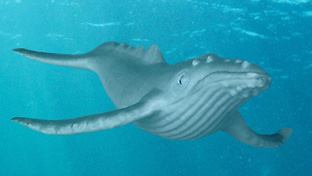
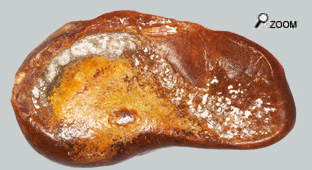

|
Des petites et des moyennes …
 
Dès le début du miocène on découvre les mysticètes, les baleines à fanons. Ces animaux sont issus d’ancêtres avec des dents. Mais leur spécialisation alimentaire tournée vers les micro-organismes ou bien de petits poissons a fini par faire disparaitre les dents devenues inutiles et installer des rideaux de fanons sur les gencives. Leur juxtaposition constitue un peigne qui retient les particules alimentaires en suspension dans la mer. Grâce à cette spécialisation, les baleines peuvent ingérer des quantités considérables de nourriture. Par contre les mysticètes actuels ne sont capables de se nourrir que si la densité des proies est assez importante et donc l'alimentation est très saisonnalisée. Ces animaux développent une couche graisseuse très importante pendant la courte période d'abondance (Eté austral ou arctique). Plus l’animal est gros plus la gestion de l’alimentation est facile. D’où le gigantisme de ces animaux actuels.
Au miocène on pouvait observer une grande diversité d’espèces de Mysticètes avec des tailles pouvant passer de quelques m à plus de dix mètres de long. A cette époque, la famille dominante est le groupe éteint des cétotheridés avec de nombreuses petites espèces mysticètes. En fait la baleine pygmée (Caperea marginata) serait le dernier représentant vivant de ce groupe. A la fin du Miocène moyen (Serravallien), la diversité des baleines à fanons augmente considérablement.  Ces toutes petites Baleines ne pouvaient raisonnablement pas faire de grandes migrations et on est en droit de penser qu’elles trouvaient suffisamment de nourriture sur nos côtes pour ne pas avoir à faire des transhumances. Le nombre d’espèces de baleines à fanons diminue drastiquement à la fin du Miocène probablement à cause de changements climatiques…
Déconcertant!…
Les mysticètes utilisent plutôt de basses fréquences tandis que les odontocètes utilisent des fréquences plutôt hautes. En vérité l’appareil auditif des mysticètes permet de couvrir une très large bande de fréquences puisqu’elles sont capables d’entendre de très basses fréquences mais aussi des sons «hautes fréquences» inaudibles pour l’homme.
Les baleines utilisent ces infra-sons à des distances considérables pour localiser d’éventuels congénères et puis aussi probablement pour repérer d’amples mouvements collectifs de microorganismes ou de petits poissons dans l’eau. Contrairement au complexe petro-tympanique des odontocètes, les os de l’oreille interne des mysticètes sont fermement unis l’un à l’autre par l'intermédiaire de deux connexions osseuses: des pédicules. En outre, le complexe petro-tympanique des mysticètes est étroitement calé entre l'os squamosal et l’exoccipital par l'intermédiaire d’une «poutre» osseuse, le processus postérieur (issu de la fusion de tissus du pétrosal et de la bulle tympanique). Par opposition, chez les odontocètes, le complexe petro-tympanique est complètement détaché de la base du crâne et suspendu par un harnais ligamentaire.
 Pour ce qui concerne les bulles, la taille de la bulle et l’épaisseur de son voile détermine la fréquence des sons captés. Plus la cymbale est grosse, plus les sons traités sont graves. La taille de la bulle devrait permettre rapidement de déterminer à quelle famille de cétacé on a à faire, une grosse bulle pouvant être attribuée à un mysticète. Mais méfiance, au miocène on trouvait d’assez nombreuses petites baleines qui n’utilisaient peut-être pas une gamme de sons aussi graves.
Pour ce qui concerne le rocher impossible de confondre, les rochers de Mysticètes sont tellement atypiques! Le rocher de mysticète est composé d’une capsule (pars cochlearis) monté et connecté à une expansion osseuse, le processus antérieur. Le process postérieur est indépendant et vient se ficher dans un logement du pars. Il est parfois solidaire du rocher. Cet ensemble prend une infinité de formes et d’aspects au point qu’il est très difficile de reconnaitre un rocher si on n’est pas spécialiste. Le matériau du pétreux peut être très dense mais aussi très poreux. Il peut être lisse ou bien présenter des reliefs très torturés.
Bonne chance aux amateurs!
|